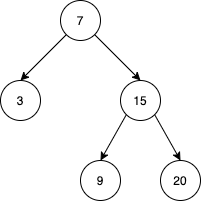

| Category | Difficulty | Likes | Dislikes |
|---|---|---|---|
| Algorithms | Medium | 271 | 52 |
stack | tree | design | binary-search-tree | binary-tree | iterator
facebook
Implement the BSTIterator class that represents an iterator over the in-order traversal of a binary search tree (BST):
BSTIterator(TreeNode root) Initializes an object of the BSTIterator class. The root of the BST is given as part of the constructor. The pointer should be initialized to a non-existent number smaller than any element in the BST.boolean hasNext() Returns true if there exists a number in the traversal to the right of the pointer, otherwise returns false.int next() Moves the pointer to the right, then returns the number at the pointer.boolean hasPrev() Returns true if there exists a number in the traversal to the left of the pointer, otherwise returns false.int prev() Moves the pointer to the left, then returns the number at the pointer.Notice that by initializing the pointer to a non-existent smallest number, the first call to next() will return the smallest element in the BST.
You may assume that next() and prev() calls will always be valid. That is, there will be at least a next/previous number in the in-order traversal when next()/prev() is called.
Example 1:

Input
["BSTIterator", "next", "next", "prev", "next", "hasNext", "next", "next", "next", "hasNext", "hasPrev", "prev", "prev"]
[[[7, 3, 15, null, null, 9, 20]], [null], [null], [null], [null], [null], [null], [null], [null], [null], [null], [null], [null]]
Output
[null, 3, 7, 3, 7, true, 9, 15, 20, false, true, 15, 9]
Explanation
// The underlined element is where the pointer currently is.
BSTIterator bSTIterator = new BSTIterator([7, 3, 15, null, null, 9, 20]); // state is [3, 7, 9, 15, 20]
bSTIterator.next(); // state becomes [3, 7, 9, 15, 20], return 3
bSTIterator.next(); // state becomes [3, 7, 9, 15, 20], return 7
bSTIterator.prev(); // state becomes [3, 7, 9, 15, 20], return 3
bSTIterator.next(); // state becomes [3, 7, 9, 15, 20], return 7
bSTIterator.hasNext(); // return true
bSTIterator.next(); // state becomes [3, 7, 9, 15, 20], return 9
bSTIterator.next(); // state becomes [3, 7, 9, 15, 20], return 15
bSTIterator.next(); // state becomes [3, 7, 9, 15, 20], return 20
bSTIterator.hasNext(); // return false
bSTIterator.hasPrev(); // return true
bSTIterator.prev(); // state becomes [3, 7, 9, 15, 20], return 15
bSTIterator.prev(); // state becomes [3, 7, 9, 15, 20], return 9
Constraints:
[1, 105].0 <= Node.val <= 106105 calls will be made to hasNext, next, hasPrev, and prev.Follow up: Could you solve the problem without precalculating the values of the tree?